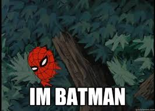

Shamalama ding dong. Use this website and grade your assignments yay! Quick Check is if you want to grade just one student solution from one assignment and get a quick assessment of the student's solution. Alternatively, you can use Dashboard to save assignments and grade multiple assignments simultaneously as well as save old assignments or student solutions on the website.
On Quick Check, you can quickly drag and drop the blank file of the assignment you want to be graded (without any markings), an example teacher solution (which displays the expectation of how the assignment should be solved), and the student solution which is graded compared to the teacher solution. Upon pressing the grade button, you will see the whateveererejrklejehekajethekg
On Dashboard, you will see a layout similar to the below. Just do whateveererejrklejehekajethekg